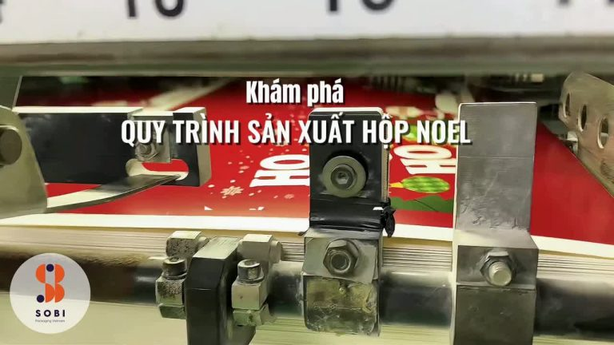
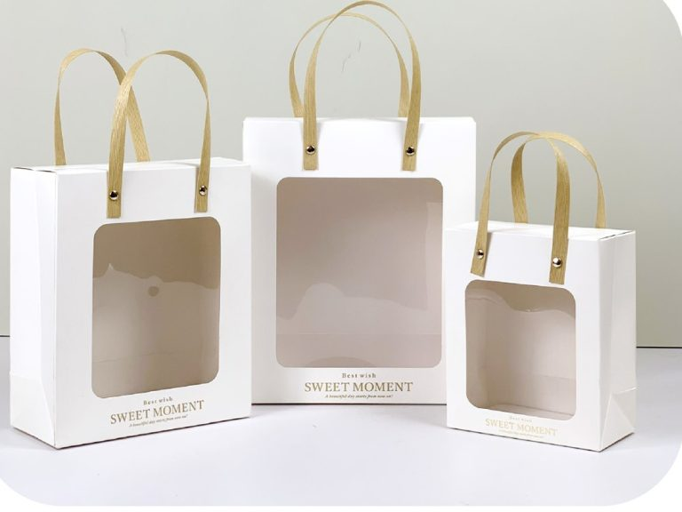

Kiến thức bao bì
Quy trình sản xuất túi giấy bằng máy tại Sobi: xem video thực tế
Xem video sản xuất túi giấy bằng máy do Sobi cung cấp và tìm hiểu những thông tin cần chuẩn bị, duyệt mẫu, kiểm tra trước khi đặt làm.
Đọc bài viếtBLOG SOBI
Tìm hiểu chất giấy, quy cách và những yếu tố cần cân nhắc khi chọn bao bì cho sản phẩm.

Xem video sản xuất túi giấy bằng máy do Sobi cung cấp và tìm hiểu những thông tin cần chuẩn bị, duyệt mẫu, kiểm tra trước khi đặt làm.
Đọc bài viết
So sánh túi giấy kraft và giấy mỹ thuật theo cảm giác bề mặt, màu sắc, độ cứng và nhu cầu sử dụng để chọn bao bì phù hợp.
Đọc bài viếtTìm hiểu cách chọn giấy mỹ thuật cho túi cao cấp, từ màu nền và cảm giác bề mặt đến độ đứng dáng, kiểu quai và duyệt mẫu.
Đọc bài viết
GSM là khối lượng giấy trên một mét vuông, không phải tải trọng túi. Tìm hiểu cách đọc thông số và kiểm tra mẫu bằng sản phẩm thật.
Đọc bài viết
Hướng dẫn đo rộng, cao và hông túi từ hộp sản phẩm, kiểm tra khoảng trống thao tác và thử mẫu trước khi đặt in túi giấy.
Đọc bài viết
Chọn quai theo trải nghiệm cầm, hình thức thương hiệu và sản phẩm cần đựng; kiểm tra phần miệng, đáy và điểm gắn quai trước đặt in.
Đọc bài viết